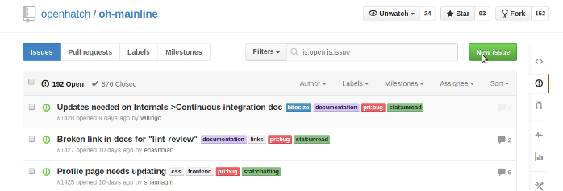

Step 1: Brainstorm Possible Projects

There are lots of different free software projects out there. Depending on how you define free software, there are tens of thousands, hundreds of thousands, or even millions. There's every type of project - from operating systems to browsers to tools for doing science and art to toys for kids. There's even a free/open source remote operated submarine!
That many choices can be overwhelming. How do you pick a project? Where do you even start?
Here are some questions you can ask yourself to help brainstorm projects:
- What free software do you use?
- What free software do your friends and mentors contribute to?
- What kind of skills, both technical and non-technical, do you have or want to learn?
- What are your interests outside of free software?
And here are some places you can browse through projects:
Make a copy of this etherpad for yourself and fill in your answers.
Step 2: Evaluate Your Projects
So you've got a few projects you might want to contribute to. Before jumping in, let's take a moment to look at the projects and see if they might be a good fit for us.
Some things you might look for in a project are whether it's active, helpful and has a good culture. But where do you look? Here are some things to look for...
The website
Questions to ask: Has the website been updated recently? Does it have a Code of Conduct? Does it link to a contributor guide or good documentation?
The mailing list
Questions to ask: How many posts does the mailing list get? Do questions get answered? Do people interact with each other in a way that makes you feel comfortable?
The IRC channel
Install IRC and IRC basics.
Questions to ask: How many people are in the IRC channel? How often do people use it? What kind of conversations do people have there? (Hint: check the logs.)
The issue tracker
Issue tracker basics.
Questions to ask: Does the project label some of the issues as good for newcomers? How many issues have been reported? How do community members respond to issues, and how quickly?
The source repository
Version control basics and practice using git.
Questions to ask: How do maintainers respond to contributions? Do they help contributors make changes? How many contributors are there?
Add your notes to your etherpad.
Step 3: Contact the Projects
Say hello on the IRC channel
If the project has an IRC channel, join it and say hello to the community members. Here are some questions you can ask the people in the channel:
- What do you like about this project?
- How did you start working on it?
- Are there any issues you think I should work on?
- What do you think is the trickiest part of contributing to this project?
Remember, just because people are in the channel doesn't mean they're paying attention to their computer. Don't worry if it takes a few minutes or even a few hours for someone to welcome you. But do feel free to try again - in a few hours, or a few days - if no one responds.
Say hello on the mailing list
Before saying hello on the mailing list, take a look through the archives and see if "introductory emails" are a thing. If they are: great! Say hello. If not, see if there's a contact person or group for the project send them an introdutory email instead.
Try contacting one of your projects.
Step 4: Find a Contribution To Make
Talk to the community
If the IRC is active, ask the people there what issues might be good for you to work on. You might even find someone willing to mentor you or pair with you on the issue.
Look in the issue tracker
Take a look in the project's issue tracker for contributions you might like to make. Pay special attention to issues labelled "bite size", "newcomer", "small" or anything similar. You can also look for issues that involve a skill you like using or want to practice.
Try to pick an issue that has some or all of the following information:
- Links or pointers to useful documentation
- An explanation of the skills and/or tools needed to solve the issue
- Where the change likely needs to be made
- The name of someone(s) in the community who can help you if you get stuck
Try a newcomer task
There are a few different kinds of tasks that are especially good for newcomers to work on. They don't require a lot of knowledge about how the projects work - in fact, for some of them, your lack of familiarity with the project will be an advantage. And almost every project will need help with them.
These tasks are:
Testing Setup Instructions
Improving Accessibility
Cleaning Issue Trackers
Pick a contribution to try to make.
Step 5: Make the Contribution
How you proceed from here will depend on the kind of contribution you're making, and how the project is set up.
Let's go over an example contribution. How would I make the following contribution: improving accessibility in OpenHatch?
Find accessibility problems in the OpenHatch website
The guide to improving accessibility suggests I start by running the project's main page through a web accessibility tool. When I try this with openhatch.org, I find that the site is missing alt text for many of its images.
Report the problem in an issue
From previous research, I know that OpenHatch has its issue tracker on github here. I can create a new issue by clicking the green button:

By reporting the issue, I have already made a contribution!
Install the project
Through my research, I have found instructions for installing the OpenHatch site in the documentation. I also know that if I run into trouble I can ask for help on the devel mailing list or in the IRC channel, #openhatch on Freenode.
Figure out where to make the change
A good approach to figuring out where to make changes on a website is to use the site's source to identify a uniquely or near-uniquely named element. For instance, the first item in the accessibility page was for "penguin.png". I can do a search for penguin.png either on github, or through the git grep terminal command.
When I do this, I find that the images are referenced in mysite/base/templates/base/landing.html. That's a long path -- I'm glad I didn't look just by poking around in directories!
Make the change! (And run tests, if there are any)
I can make the change by adding an alt attribute to the first instance of penguin.png. I can test that the change worked by restarting the site and then inspecting the element in my browser. Is the alt text there? Success!
The project's documentation tells me how to run tests. If there's weird output you don't know how to interpret, you can also try running the tests before and after you make your change. If the test output is identical, your change is probably not the cause of test weirdness, and you can proceed.
Save my changes, and make a pull request
OpenHatch uses git and github, so I can save my changes by committing them and pushing them back to Github. I can then create a pull request. (Don't know about committing and pull requests? Try here.)
Now you try a contribution!
Learn More
Need help? Want to get involved with OpenHatch? Join us!
Read about different kinds of contributions at the Merge Stories project.